If zodiac signs answer the question ‘how’, planets answer ‘what exactly’ is happening in life: the Sun is consciousness and will, the Moon is feeling, and Mars is action. Each planet is an archetypal energy whose expression depends on the sign, house and aspects in the natal chart. Below are 13 cards: select a factor to read about its energy, constructive expression and shadow.
Sun
Will, vitality, consciousness
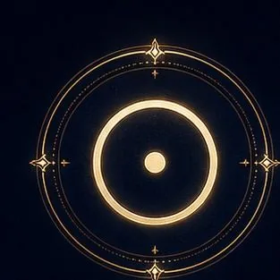
Moon
Feelings, intuition, inner security
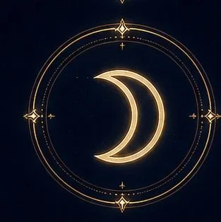
Mercury
Mind, speech, connection, and information
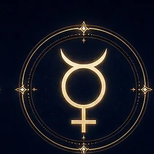
Venus
Love, values, attraction
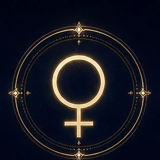
Earth
Embodiment, body, support
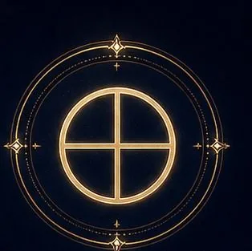
Mars
Action, passion, the will to win
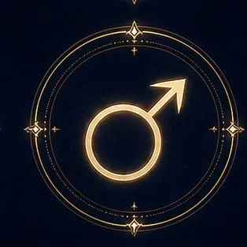
Jupiter
Growth, faith, luck, meaning
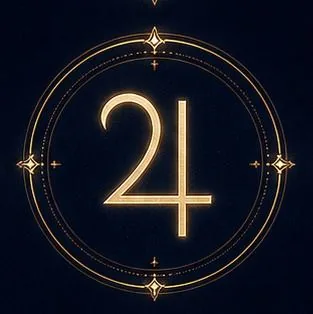
Saturn
Structure, discipline, maturity
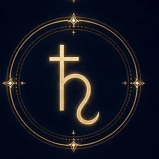
Uranus
Freedom, insight, awakening
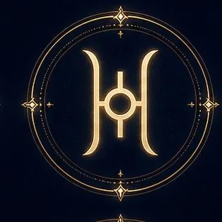
Neptune
Inspiration, mysticism, dissolving boundaries
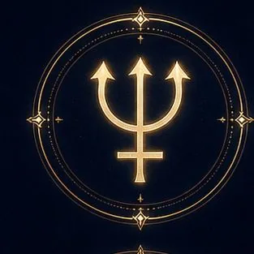
Pluto
Transformation, depth, power
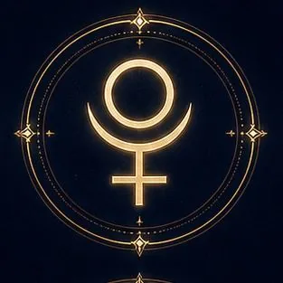
Chiron
The wounded healer, healing
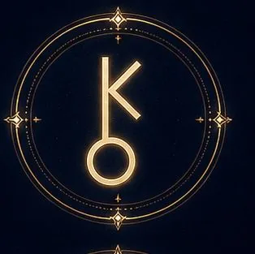
Proserpina
Subtle transformation, purification
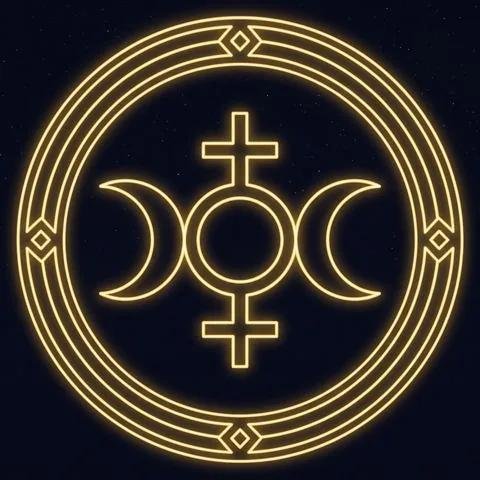
Proserpina is a hypothetical point used in the Eastern European esoteric tradition and is not a recognized astronomical object; interpretations differ among modern spiritual schools. Chiron is astronomically classified as a small Solar System body. The Sun is a star and the Moon is Earth’s satellite, although traditional astrology conventionally groups them with the planets as significant factors in the natal chart. These descriptions are symbolic and are not scientific explanations of personality or fate. This material is not a diagnosis or financial advice. (A feature of the Eastern European esoteric tradition.)